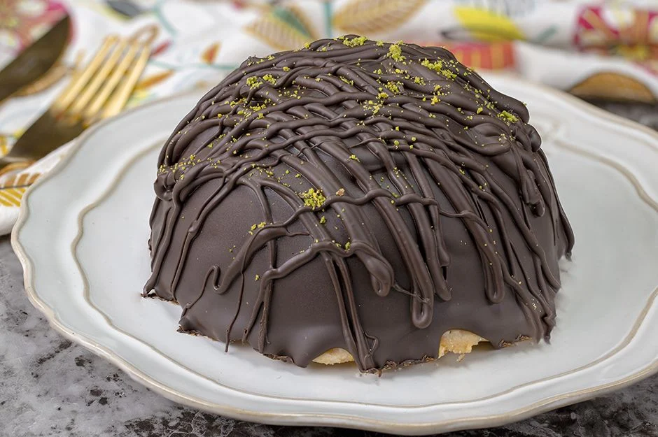

Malzemeler
1 litre süt 2 paket toz vanilyalı puding 3 paket petibör bisküvi (10 adet bütün, gerisi parçalanmış) Üzeri İçin: 80 gram bitter çikolata (eritilmiş) 1,5 yemek kaşığı toz Antep fıstığı
Tarifin Uygulanması
- Derin bir tencereye süt ve toz vanilyalı pudingi ekleyin ve orta ateşte sürekli olarak çırparak pişirin.
- Puding kıvamını alınca karışımı ocaktan alın ve kabuklanmaması için ara ara karıştırarak oda sıcaklığında soğutun.
- Oda sıcaklığına gelmiş olan pudingin içerisine parçalanmış olan petibör bisküvilerini ekleyin ve karıştırın.
- Karışımı iç kısmını streçlediğiniz yuvarlak kaselerin içerisine eşit olarakpaylaştırın ve alt kısmını düzleştirin.
- Karışımı eklediğiniz kaselerin üzerine bütün halindeki bisküvileri taban olarak ekleyin. Sığmayan bisküvileri boyutuna göre parçalayıp her tarafını kapatın.
- Hazırladığınız pastaların üzerini de streç filmle kapatıp buzlukta 4 saat bekletin.
- Buzluktan çıkardığınız pastaların streçlerini açıp, kaseden çıkarın.
- Çikolata ile kaplamak için tel ızgara veya bir tabaın içerisine pastaları yerleştirin.
- Benmari usulü erittiğiniz bitter çikolatayı pastaların her yerine gelecek şekilde üzerlerine gezdirin. Şekil vermek isterseniz kapladığınız çikolatanın donmasını 1-2 dakika bekledikten sonra tekrardan şeritler halinde eritilmiş çikolatayı üzerlerine gezdirin.
- Son olarak toz antep fıstığını da pastanın üzerine serpiştirip servis edin.